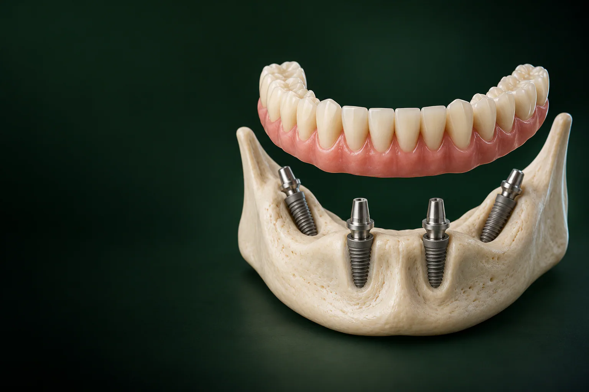

Хлудневский Михаил Сергеевич
Хирург, имплантолог
Имплантация, удаление зубов и подготовка к имплантации
Записаться к врачу
All on 4, это несъёмные зубы на 4 имплантах: четыре импланта на челюсть и цельный протез на всю дугу.
Имеются противопоказания. Необходима консультация специалиста.
уточняем у клиники
Такой вариант подходит тем, у кого зубов нет или их предстоит удалить, а съёмный протез неудобен. В «Умной Медицине» в пос. Удельная (Раменский округ) хирургический этап лечения по схеме «все на 4-х имплантах» стоит от 114 000 ₽, временный протез: от 77 000 ₽ по акции по акции.
Все на 4 имплантах, с немедленной нагрузкой: временный протез фиксируют вскоре после операции, точный срок, по плану лечения уточняем у клиники.
Имеются противопоказания. Необходима консультация специалиста.
пос. Удельная, ул. Громова, 10/2
All-on-4: это способ восстановить всю зубную дугу на четырёх опорах, а не ставить отдельный имплант под каждый зуб. Название переводится с английского как «всё на четырёх»: так методику часто и называют по-русски.
Как это устроено:
Импланты для такого лечения, те же системы, что и при одиночной имплантации: в клинике, Osstem, Dentium, Straumann или Riellen's. Готовый протез выглядит как сплошной ряд зубов, часто с искусственной десной у основания.
Чем методика отличается от других способов восстановления? При классической имплантации зубов каждый имплант несёт свою коронку, и для всей челюсти понадобилось бы больше опор и больше кости. Четыре импланта требуют меньше вмешательства, а протез распределяет нагрузку между опорами. Если не хватает лишь нескольких зубов, разумнее коронка на имплант или мост. От съёмного протеза All-on-4 отличается тем, что его не снимают дома и он не опирается на десну. Другие варианты описаны в разделе «протез на имплантах».
Плюсы:
Ограничения:
Такой протез выбирают те, кому нужен именно несъёмный вариант. Даже при небольшом объёме кости его часто удаётся закрепить на четырёх имплантах без предварительного наращивания: это решают по КТ. Восстановить так можно и верхнюю, и нижнюю челюсть уточняем у клиники.
Методика подходит не всем: решение принимают по осмотру, КТ и, при необходимости, анализам.
На верхней челюсти кость обычно более рыхлая, а в боковых отделах близко расположены гайморовы пазухи. Здесь импланты планируют так, чтобы дальние под наклоном прошли перед пазухами. Если кости всё же недостаточно, лечение может потребовать синус-лифтинга или костной пластики. На нижней челюсти кость плотнее, а главное ограничение другое: нижнечелюстной нерв, который импланты обходят.
Лечение проходит в несколько этапов: от диагностики до постоянного протеза, и понадобится несколько визитов уточняем у клиники.
Хирург-имплантолог и ортопед осматривают полость рта, оценивают оставшиеся зубы, прикус и общее здоровье. Консультация с составлением плана лечения: 0 ₽, если остаётесь на лечение. Обязательна КТ зубов и челюстей, 4 500 ₽ за исследование двух челюстей; при необходимости делают панорамный снимок (ОПТГ), 1 700 ₽.
По КТ хирург виртуально расставляет импланты: выбирает их положение, длину и угол наклона дальних. Ортопед на том же 3D-плане продумывает будущий протез. План утверждают на консилиуме и фиксируют смету по этапам. По плану изготавливают хирургический шаблон, от 24 200 ₽; он помогает поставить импланты в рассчитанное положение уточняем у клиники.
Как правило, всё делают за одну операцию: хирург проводит удаление зубов, которые нельзя сохранить, и устанавливает четыре импланта по шаблону. Операцию проводят под анестезией уточняем у клиники. Во время вмешательства действует обезболивание, а после него несколько дней возможны отёк и дискомфорт: врач объяснит, как их облегчить, и даст рекомендации по питанию и гигиене.
Временный протез, адаптационный, из композита, фиксируют на импланты вскоре после операции уточняем у клиники. Так пациент не остаётся без зубов на время приживления. Пока импланты приживаются, жевательную нагрузку ограничивают: врач порекомендует мягкую пищу. Когда говорят о зубах за один день, имеют в виду именно временный протез: постоянный ставят позже.
Постоянный протез изготавливают после приживления имплантов уточняем у клиники. Ортопед снимает оттиски или сканирует челюсть, проверяет прикус и примеряет конструкцию. Протезирование зубов на 4 имплантах завершается фиксацией постоянного протеза; о материалах: в блоке «Какой протез ставят на 4 импланта».
| Этап | Что происходит | Срок |
|---|---|---|
| Консультация и КТ | Осмотр, КТ, 3D-план, смета по этапам | уточняем у клиники |
| Операция и временный протез | Удаление зубов, установка 4 имплантов, фиксация временного протеза | уточняем у клиники |
| Приживление | Ношение временного протеза, щадящее питание | уточняем у клиники |
| Постоянный протез | Оттиски или сканирование, примерки, фиксация | уточняем у клиники |
| Контрольные осмотры | Профгигиена, проверка прикуса и имплантов | уточняем у клиники |
Цена складывается из хирургического этапа, временного и постоянного протеза. Каждый этап мы показываем отдельно, а не одной суммой «от», чтобы было видно, за что вы платите.
Цены актуальны на 17.10.2026 и не являются публичной офертой. Точная стоимость: по плану лечения после консультации и КТ.
Имеются противопоказания. Необходима консультация специалиста.
Цена хирургического этапа одна для всех четырёх систем: импланты Osstem, Dentium, Straumann и Riellen's. Протезы стоят так же, как для All-on-6 и All-on-8, различается только хирургический этап. Больше всего итоговая сумма зависит от материала постоянного протеза: композитный стоит от 148 500 ₽, циркониевый, от 258 500 ₽, поэтому материал лучше обсудить с ортопедом заранее.
Хирургический этап, это четыре импланта одной из систем (Osstem, Dentium, Straumann или Riellen's) и их установка. Входят ли в цену абатменты (мульти-юниты: переходники между имплантом и протезом), анестезия, хирургический шаблон и удаление зубов, уточняем у клиники. Цена «от» одна на все системы; есть ли разница между ними, уточняем у клиники.
Стоимость лечения одной челюсти складывается из трёх основных позиций:
уточняем у клиники
Отдельно, по показаниям, добавляются КТ (4 500 ₽), хирургический шаблон (от 24 200 ₽), удаление зубов, костная пластика или синус-лифтинг. Цена для вашей челюсти фиксируется в плане лечения после КТ.
Итоговая сумма зависит от нескольких факторов:
Для каждой челюсти цену считают отдельно. На верхней она может быть выше, если для дальних имплантов понадобится синус-лифтинг.
На четыре импланта ставят несъёмную конструкцию на всю дугу. Протезирование проходит в два этапа: сначала временный протез, потом постоянный. Протезы различаются материалом, весом и ценой.
Первый протез, временный: композитный адаптационный, от 77 000 ₽ по акции. Он лёгкий и нужен, чтобы вы могли есть и говорить, пока импланты приживаются, и чтобы не перегрузить их. Сколько его носят: уточняем у клиники. К протезу нужно привыкнуть: в первые дни может меняться дикция, а жевать лучше мягкую пищу; сколько длится привыкание, зависит от человека.
Постоянный протез делают из одного из трёх материалов, и от материала зависит его стоимость:
| Материал | Особенности | Цена |
|---|---|---|
| Композит | Лёгкий, проще в починке; со временем изнашивается и может темнеть быстрее керамики | от 148 500 ₽ |
| Металлокерамика | Металлический каркас с керамической облицовкой; прочный, тяжелее композитного | от 192 500 ₽ |
| Цирконий | Диоксид циркония: высокая прочность, естественный вид, устойчивость к износу и окрашиванию | от 258 500 ₽ |
Протезы из любого материала требуют гигиены и осмотров, срок их службы зависит от ухода, прикуса и нагрузки. Обычно такие протезы крепятся на винтах, и снять протез для профессиональной чистки может только врач уточняем у клиники.
Несъёмный протез пациент не снимает: он ощущается ближе к своим зубам и не давит на десну. Съёмный вариант крепится к имплантам на замках, его снимают для чистки дома, но он может немного смещаться. уточняем у клиники Все варианты описаны на странице «протез на имплантах». Обычные съёмные протезы без имплантов опираются только на десну.
Что лучше, All-on-4 или All-on-6, однозначно сказать нельзя: выбор зависит от объёма и плотности кости, жевательной нагрузки и прикуса. Сравнение по основным параметрам:
| All-on-4 | All-on-6 | All-on-8 | |
|---|---|---|---|
| Число имплантов | 4 | 6 | 8 |
| Требования к кости | Ниже: дальние импланты ставят с наклоном, часто без наращивания | Нужен больший объём кости по дуге | Нужен достаточный объём кости по всей дуге |
| Распределение нагрузки | На 4 опоры | На 6 опор, нагрузка на каждый имплант меньше | На 8 опор |
| Зубов в протезе | Обычно 10–12 уточняем у клиники | Определяет ортопед по КТ и прикусу | Определяет ортопед по КТ и прикусу |
| Когда предлагают | Кости мало, хочется избежать наращивания | Кость позволяет, большая жевательная нагрузка, рыхлая кость верхней челюсти | По решению хирурга, когда нужна дополнительная опора |
| Хирургический этап | от 114 000 ₽ | от 166 100 ₽ | от 217 800 ₽ |
Протезы стоят одинаково для 4, 6 и 8 имплантов. Итог: выбор делает хирург по КТ, а не пациент по цене. Подробнее: на странице All-on-6, там же, про All-on-8.
All-on-4, работа двух специалистов: хирург-имплантолог устанавливает импланты, стоматолог-ортопед проектирует и фиксирует протез. Они работают в паре, а план лечения утверждают на консилиуме до операции.
уточняем у клиники
Хирург, имплантолог
Имплантация, удаление зубов и подготовка к имплантации
Записаться к врачу
Хирург, имплантолог
Удаление зубов и имплантация, хирургия в сложных случаях
Записаться к врачу
Главный врач, ортопед
Протезирование и восстановление зубов, протезы на имплантах
Записаться к врачу
Ортопед
Восстановление зубов и протезирование, эстетичные коронки
Записаться к врачуВ этом блоке публикуем только реальные работы клиники с письменного согласия пациентов. В подписи к каждому фото: челюсть, система имплантов и сколько времени прошло после лечения.
пример работы
Отзывы пациентов собираем отдельно: именно о лечении на четырёх имплантах, с указанием врача.
отзыв пациента
Отзывы помогают понять, как проходит привыкание к протезу, но ваш план зависит от КТ и общего здоровья. На разных площадках мнения часто расходятся, потому что у каждого пациента своя кость и своя исходная ситуация. Чужой опыт не заменяет осмотра, поэтому вопросы, которые возникли после чтения, задайте врачу на консультации. Отзывы о конкретном враче: на его личной странице.
Гарантия. На что даётся гарантия, импланты, протез, работа клиники, её срок и условия (например, обязательные контрольные осмотры): уточняем у клиники.
Рассрочка. Лечение можно оплатить в рассрочку уточняем у клиники.
Скидка. −10% при оплате лечения в день консультации уточняем у клиники.
Налоговый вычет. Расходы на лечение можно включить в социальный налоговый вычет по НДФЛ; клиника выдаёт документы для налоговой уточняем у клиники.
Подробнее: на странице «рассрочка и налоговый вычет».
Чистка: ежедневная привычка, от которой во многом зависит, как долго прослужат импланты и протез.
Это 4 импланта на челюсть, из них 2 дальних ставят с наклоном, и цельный несъёмный протез на всю дугу. Протез фиксируют на импланты, дома его не снимают.
Обычно 10–12 на челюсть. Точное число ортопед определяет по КТ, прикусу и размеру дуги уточняем у клиники.
Временный протез ставят с немедленной нагрузкой: вскоре после операции уточняем у клиники. Постоянный протез изготавливают после приживления имплантов.
Цена за одну челюсть складывается из хирургического этапа (от 114 000 ₽), временного протеза (от 77 000 ₽, акция) и постоянного протеза: от 148 500 ₽ (композит), от 192 500 ₽ (металлокерамика) или от 258 500 ₽ (цирконий). Итог зависит прежде всего от материала постоянного протеза, а КТ, шаблон и удаление зубов добавляют по показаниям. Стоимость каждого этапа записывают в план лечения ещё до операции, а точной для вашего случая она станет после консультации и КТ уточняем у клиники.
Зависит от объёма и плотности кости, жевательной нагрузки и прикуса. Решение принимают по КТ. Подробнее, на странице All-on-6.
Часто нет: дальние импланты ставят с наклоном и используют кость там, где её больше. Если кости всё же мало, понадобится костная пластика или синус-лифтинг, это видно на КТ.
Честный ответ: протезирование в два этапа, сначала временный, потом постоянный протез, обязательная гигиена и регулярные осмотры. Опор всего четыре, поэтому от каждого импланта многое зависит. И методика подходит не всем: при некоторых заболеваниях врач предложит другой вариант.
Операция проходит под анестезией уточняем у клиники. После неё несколько дней возможны отёк и дискомфорт; врач даёт рекомендации и при необходимости назначает обезболивающее.
Дома: щётка, ирригатор и суперфлосс для чистки под протезом. В клинике, профессиональная гигиена со снятием протеза и контрольные осмотры уточняем у клиники.
Это несъёмная дуга зубов, часто с искусственной десной у основания: она восполняет участки, где кость и десна убыли. Протез не закрывает нёбо. Фото до и после, в блоке выше.
Запишитесь на консультацию имплантолога: после КТ врач составит план лечения с ценой по этапам.
Имеются противопоказания. Необходима консультация специалиста.
Адрес: Московская область, Раменский округ, пос. Удельная, ул. Громова, 10/2.
Парковка и режим работы: уточняем у клиники.
На машине и на электричке: уточняем у клиники.
Расположение: рядом с Жуковским; по соседству Малаховка, Быково, Ильинский, Родники, Островцы, Красково, Октябрьский. К нам приезжают и из Люберец, Раменского и Балашихи.
All-on-4 для жителей Раменского округа и Жуковского: здесь, в Удельной. Пациентам из Люберец, Балашихи, Быково, Малаховки, Ильинского и Краскова имплантацию все на 4 удобно начать с консультации и КТ: по ним сразу видно, сколько визитов понадобится.
Имеются противопоказания. Необходима консультация специалиста.
пгт Удельная, Раменский округ, рядом с Жуковским.
Ежедневно с 9:00 до 21:00
+7 495 150-36-15К нам ездят из Жуковского, Раменского, Быкова, Ильинского, Красково, Малаховки, Островцов, Люберец и Балашихи.
Перезвоним за 5 минут, подберём врача и удобное время.
Оставьте номер, администратор перезвонит и ответит на вопросы.
Подойдёт КТ, панорама, прицельный снимок или фото плана лечения из другой клиники. Врач посмотрит и ответит в течение рабочего дня. Это бесплатно.
Хирург, ортопед и терапевт осмотрят вас вместе, сделаем КТ. Консультация бесплатная, если остаётесь на лечение. Стоимость лечения врач назовёт после осмотра.
Консультацию ведут вместе
ХирургМихаилОртопедЕвгений ТерапевтАртём
ТерапевтАртёмПервый визит 0 ₽, если остаётесь на лечение
Хирург, ортопед и терапевт посмотрят ваш случай вместе и предложат два-три варианта с ценой. Оставьте номер, администратор перезвонит и подберёт время.
Скидка 10% на лечение, если оплатить его в день консультации
Перезвоним за 5 минут, ежедневно с 9:00 до 21:00.